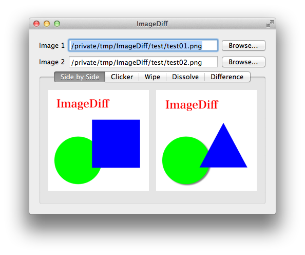
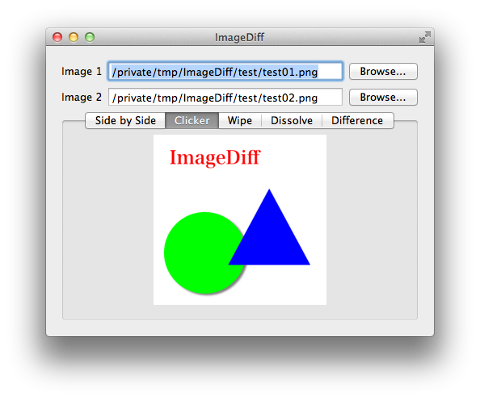
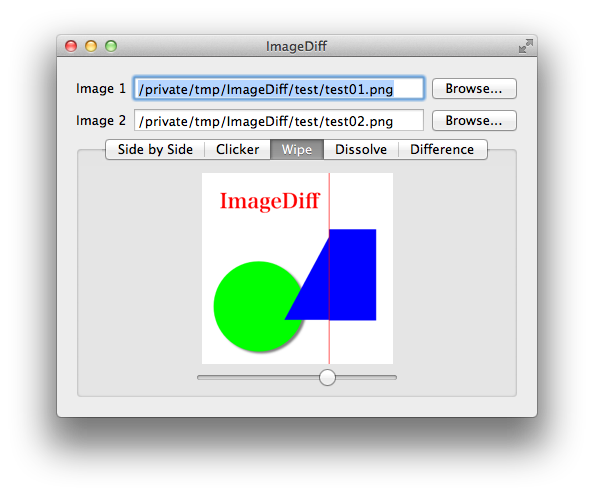
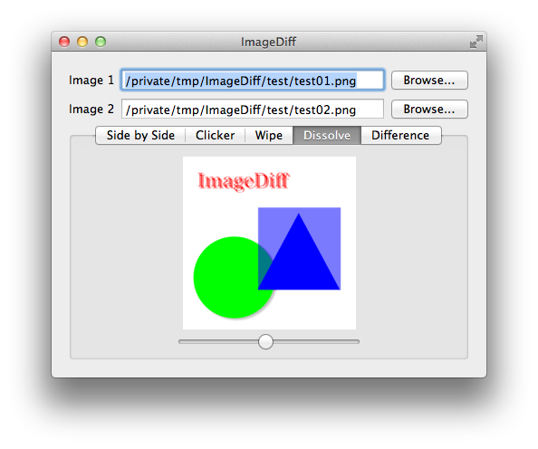
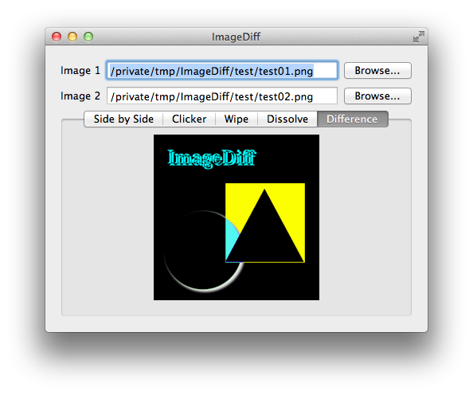

ImageDiff is an application for Mac OS X that helps you to find the difference between two images in several ways.

Puts two images horizontally, compare them

Shows two images alternately by clicking them

Piles two images. By sliding the slider, the width of the upper image is change

Piles two images. By sliding the slider, the opacity of the upper image is change

Shows the difference image made from two images